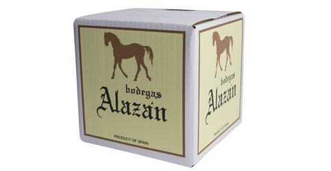
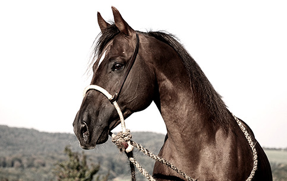
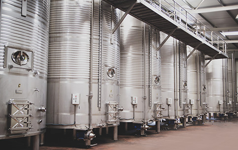
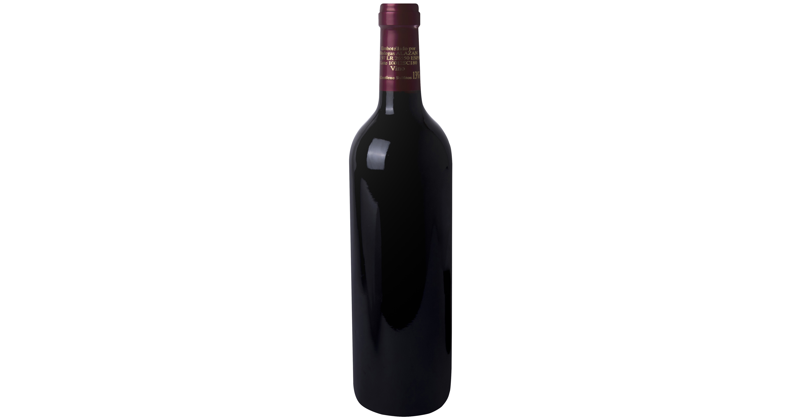
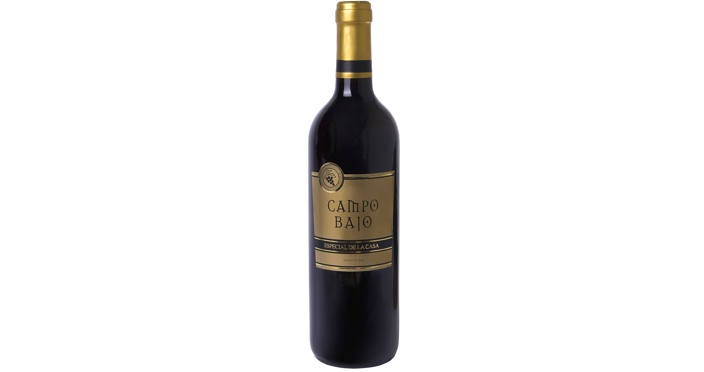
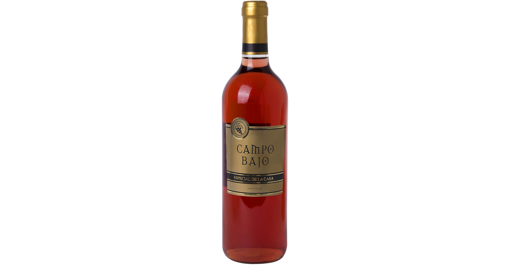
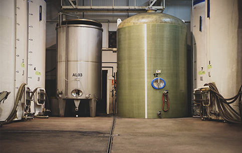
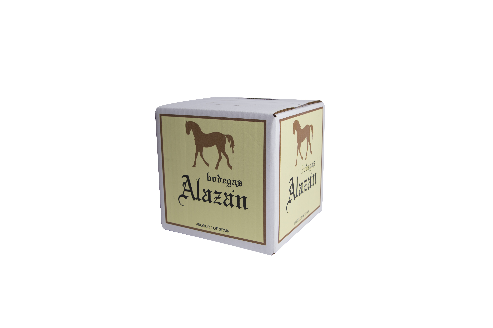
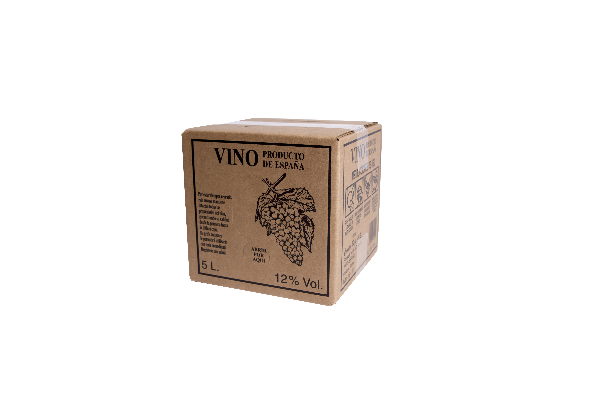
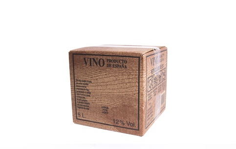

Alazán
Blanco
Amarillo ámbar limpio y brillante, con aromas de flores blancas, frutas y matices especiados. Sedoso, seco y con buen final.
Desde 2003
Bodegas Alazán nace en Rincón de Soto impulsada por jóvenes unidos al cultivo de la vid y al vino del valle del Ebro.
La bodega trabaja en la elaboración, almacenamiento y comercialización de vinos de mesa y vinos cosecheros, tanto embotellados como a granel, con presencia en el mercado nacional e internacional, principalmente en países europeos.
“Entre las viñas, trota alazán y llena copa, vino rojizo y canela en un brindis, tinto, rosado y blanco”.


Instalaciones
La bodega cuenta con capacidad de almacenamiento de 1.500.000 litros en depósitos de acero inoxidable.
Su proceso incorpora tecnología moderna para el tratamiento del vino, con especial atención a la filtración tangencial, que permite trabajar con esterilidad en un solo paso y sin residuos sólidos.
Catálogo
Alazán, Campo Bajo y Venta Blancas forman la base comercial de una bodega orientada a vinos cercanos, honestos y fáciles de disfrutar.

Amarillo ámbar limpio y brillante, con aromas de flores blancas, frutas y matices especiados. Sedoso, seco y con buen final.

Color salmón pálido, nariz intensa y notas frutales. Seco, vivo y alegre en boca.

Color rubí, aromas de cereza, ciruela, mora y arándano. Seco, con taninos suaves y recuerdos de frutas rojas.

Color granate teja, aromas tostados y de roble procedentes de la crianza. Suave, seco y agradable.

Atractivo rubí a la vista, intenso en nariz, seco y suave en taninos.

Ámbar limpio y brillante, con aromas de frutas, flores blancas y matices tostados.

Tono salmón suave, aromas frutales intensos y una boca seca, alegre y chispeante.

Una de las marcas embotelladas por Bodegas Alazán para completar su gama comercial.
Venta a granel
Bodegas Alazán comercializa vino a granel manteniendo el cuidado en el embotellado, la conservación y la seguridad durante el transporte.
Vinos de mesa del año con una propuesta directa y de buena relación entre calidad y precio.
Filtración tangencial y depósitos de acero inoxidable para conservar las cualidades del producto.
Atención al envasado y a la seguridad logística para que el vino llegue en buenas condiciones.
Formatos prácticos
Formatos de 5 y 15 litros con bolsa hermética y grifo, pensados para conservar el vino y facilitar el servicio.

Tinto y rosado en formato práctico para vino cosechero a granel.

Formato grande en tinto y rosado para consumo habitual.

Tinto, rosado y blanco en una presentación manejable.

Tinto y rosado en caja con acabado de madera.

Tinto, rosado y blanco con bolsa hermética y grifo.
Contacto